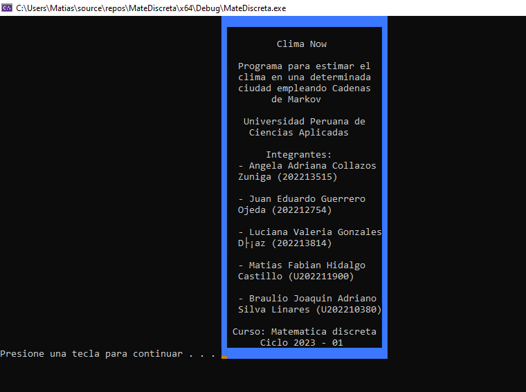
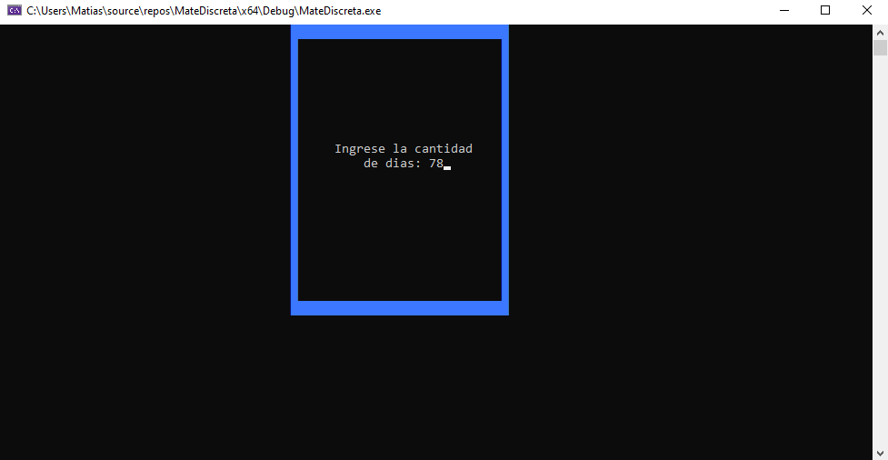
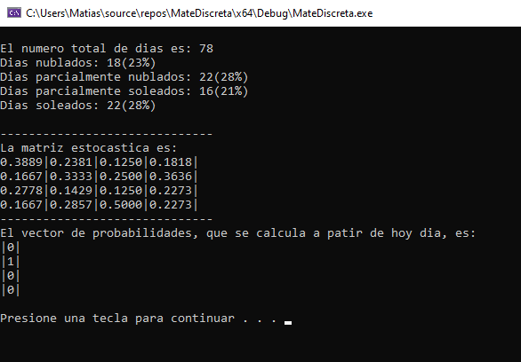
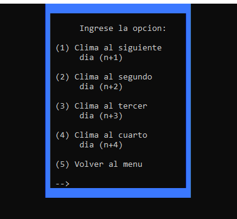
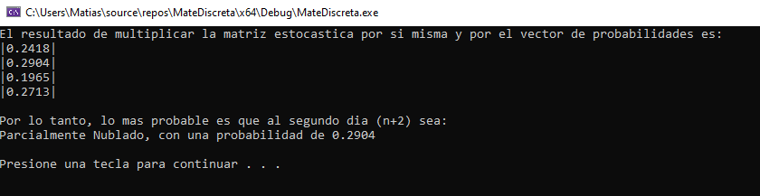
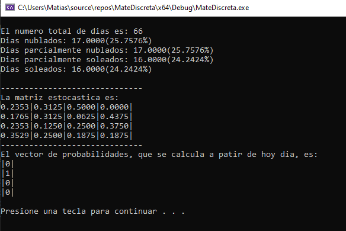

Características principales:
- Modelo probabilístico: Predicciones basadas en la matriz de transición de Cadenas de Markov.
- Simulación climática: Posibilidad de estimar el clima en intervalos de tiempo definidos por el usuario.
- Eficiencia computacional: Algoritmo optimizado para realizar múltiples simulaciones rápidamente.
Imágenes
Imagen de la página principal

Imagen de los créditos
Si se selecciona la opcion 1 se debe ingresar la cantidad de días
Imagen de la matriz generada
Se debe seleccionar una opcion para ver el clima con mayor probabilidad de ese día
Al seleccionar una opcion, se muestra el clima con mayor probabilidad
Si se selecciona la opcion 2, la cantidad de dias se genera sola
